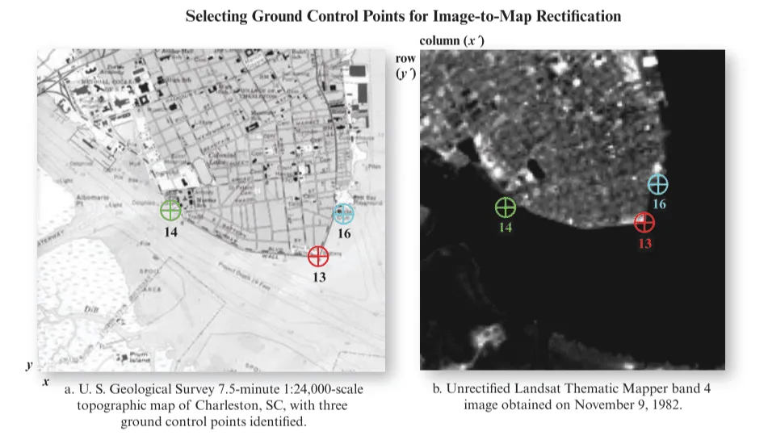
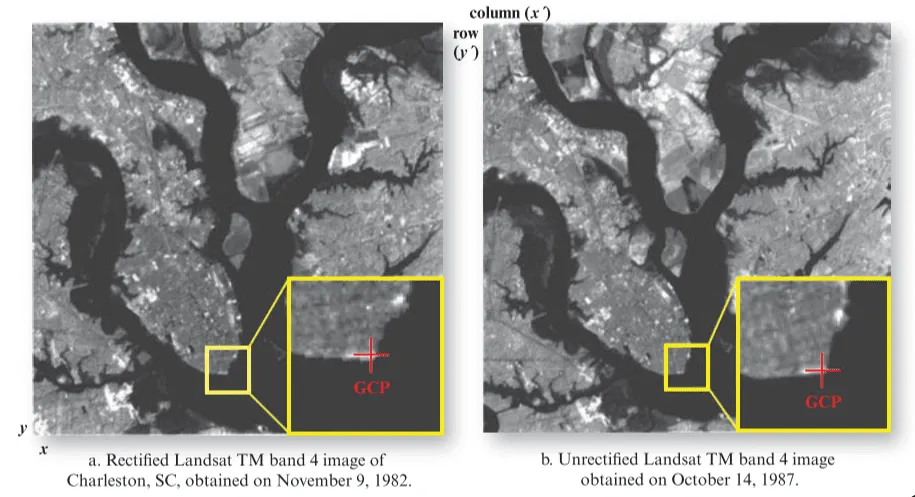

3 Corrections
3.1 SUMMARY
This week we looked at the story of Virginia Norwood known as the mother of Landsat. She designed the Multispectral Scanner (MSS) against the good old RBV(return beam vidicon) sensor.
Landsat collects images in long narrow strips called “swaths.” Previous Landsat sensors swept back and forth across the swath like a whisk broom to collect data.
In contrast, the instruments on Landsat 8 view across the entire swath at once, building strips of data like a push broom.
https://svs.gsfc.nasa.gov/vis/a010000/a012700/a012754/frames/1920x1080_16x9_30p/pushbroomTIFF/
GEOMETRIC CORRECTION
Geometric distortions introduced by sensor system attitude (roll, pitch, and yaw) and/or altitude changes can be corrected using ground control points and appropriate mathematical models (e.g., Im et al., 2009). A ground control point (GCP) is a location on the surface of the Earth (e.g., a road intersection) that can be identified on the imagery and located accurately on a map.
There are two types of geometric correction-
image-to-image rectification and
image-to-image registration
Image-to-map rectification is the process by which the geometry of an image is made planimetric. The image-to-map rectification process normally involves selecting GCP image pixel coordinates (row and column) with their map coordinates counterparts (e.g., meters northing and easting in a Universal Transverse Mercator map projection).

Image-to-image Registration
Image-to-image registration is the translation and rotation alignment process by which two images of like geometry and of the same geographic area are positioned coincidentally concerning one another so that corresponding elements of the same ground area appear in the same place on the registered images.

ATMOSPHERIC CORRECTION
The two most important sources of environmental attenuation are
1) atmosphere attenuation caused by scattering and absorption in the atmosphere, and 2) topographic attenuation.
For example, consider the case of the normalized difference vegetation index (NDVI) derived from Landsat Thematic Mapper (TM ) band 3 (red) and band 4 (near-infrared) data.
A rather simple method to correct raw satellite (or any other imagery) is called dark object subtraction(DOS) which uses the idea that the darkest pixel within the image should be 0 and any value it has is attributed to atmosphere. so to remove it we will subtract that value from the rest of the pixels within the image.
DIGITAL NUMBER
First, we need to download some raw satellite data that comes in DN format. we are using Lansat 8 collection1 (or 2) level-1 bundle.
Texture Analysis is one of the most important characteristics dealt with during image interpretation and classification. Texture analysis has been successfully applied to forestry and vegetation studies using a variety of remote sensing data (Asner et al., 2002; Franklin et al., 2000) and radar images (Costa, 2004; Hess et al., 2003).
3.2 APPLICATION
The practical content addressed corrections using raw satellite imagery, merging images, and enhancements. This application section will focus on studies that have made use of atmospheric corrections.
Multispectral and radar satellite remote sensing (SRS) imagery has become an important source for investigating species ecology and ecosystem structure. SRS data fusion techniques, Integrating and fusing multispectral and radar images can significantly improve our ability to assess the distribution as well as the horizontal and vertical structure of ecosystems.
Multispectral sensors passively measure electromagnetic radiation reflected from the Earth’s surface, radar sensors are active, meaning they emit electromagnetic radiation and then measure the returning signal.
Additionally, radar sensors penetrate atmospheric conditions that incapacitate multispectral sensors, such as clouds, haze, and fog, and can (depending on wavelength) return information from below the canopy (Santoro, Shvidenko, McCallum, Askne, & Schmullius, 2007) or even from subsurface layers (McCauley et al., 1982).
This type of fusion includes object-level fusion, in which a landscape is divided into multi-pixel objects based on information from different remote sensors (Blaschke, 2010), and pixel-level fusion, where pixel values are combined to derive a fused image with new pixel values, either in the spatial (Zhang, 2010) or the temporal (Reiche, Verbesselt, Hoekman, & Herold, 2015) domain. Since both pixel-and object-level fusions result in a new image, we will here refer to them as image fusion
3.3 REFLECTION
Well, this week was quite interesting and intense as we learned a lot of different techniques to improve our imagery. What I understood is that when we download imagery from the satellite onto our computer the first step to use it in our analysis is to check its characteristics like the DN, and radiance value. After that, we take measures like atmospheric correction, geometric correction, fusion, and other techniques that improve the quality of imagery. Usually these days the the above corrections are already done so we do not have to check the above but it is a good practice to know all these specifics about the satellite imagery. We can always use image fusion or image enhancement and even change the texture.